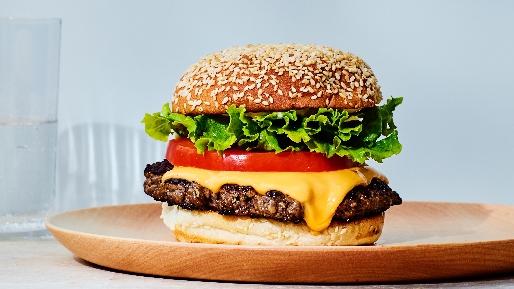

Cheeseburger

Description
A juicy flavorful smash burger with American cheese, a sesame seed bun, a crisp piece of lettuce and a juicy tomato slice. Excellent for an informal gathering of friends or family dinner night!
Ingredients
- 1 lb. ground beef
- 4 American cheese slices
- 4 Sesame seed potato rolls
- 2 tbsp. butter or margarine
- 4 pieces leaf lettuce
- 4 1/4-inch slices tomato
- Salt and pepper to taste
- 2 tbsp. vegetable oil
Steps
- Divide ground beef into 4 portions and form each portion into a ball with your hands.
- Use your thumb to create a divot in each ball, and then flatten into patties.
- Heat a large skillet over medium high heat.
- Melt butter and place buns, cut sides down, into the skillet and cook for 2 minutes or until golden-brown.
- Increase heat to high and add oil. Heat until shimmering.
- Add patties one by one and smash them with a spatula until they are 1/2-inch thick. Season with salt and pepper.
- Cook one side until deeply browned, then flip. Season again. Add American cheese to patty and cook until cheese is melted (1-1.5 minutes).
- Transfer patties to bottom buns. Top with lettuce and tomato. Add any desired condiments to top bun and place on top. Serve immediately.